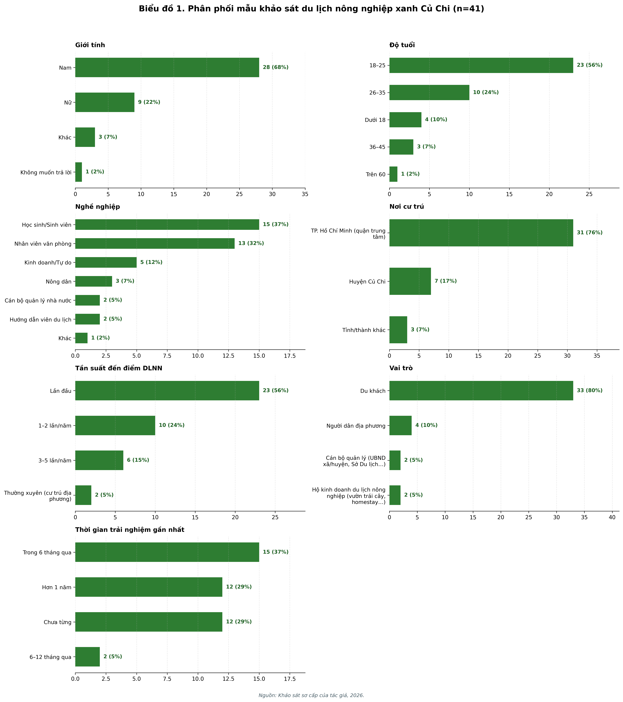
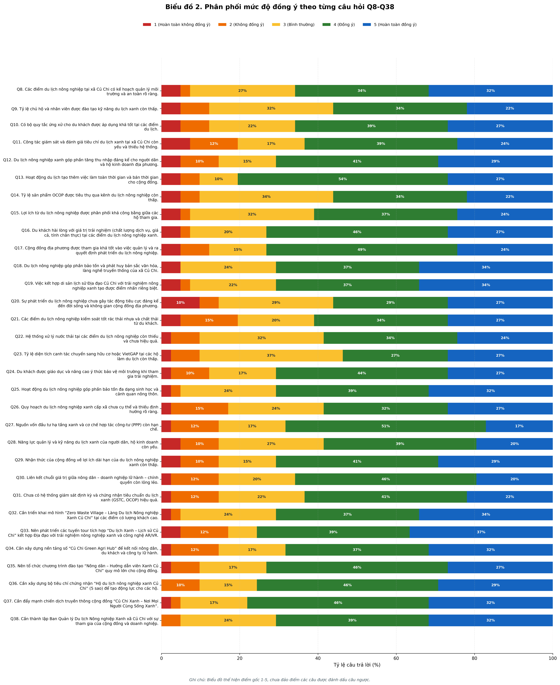
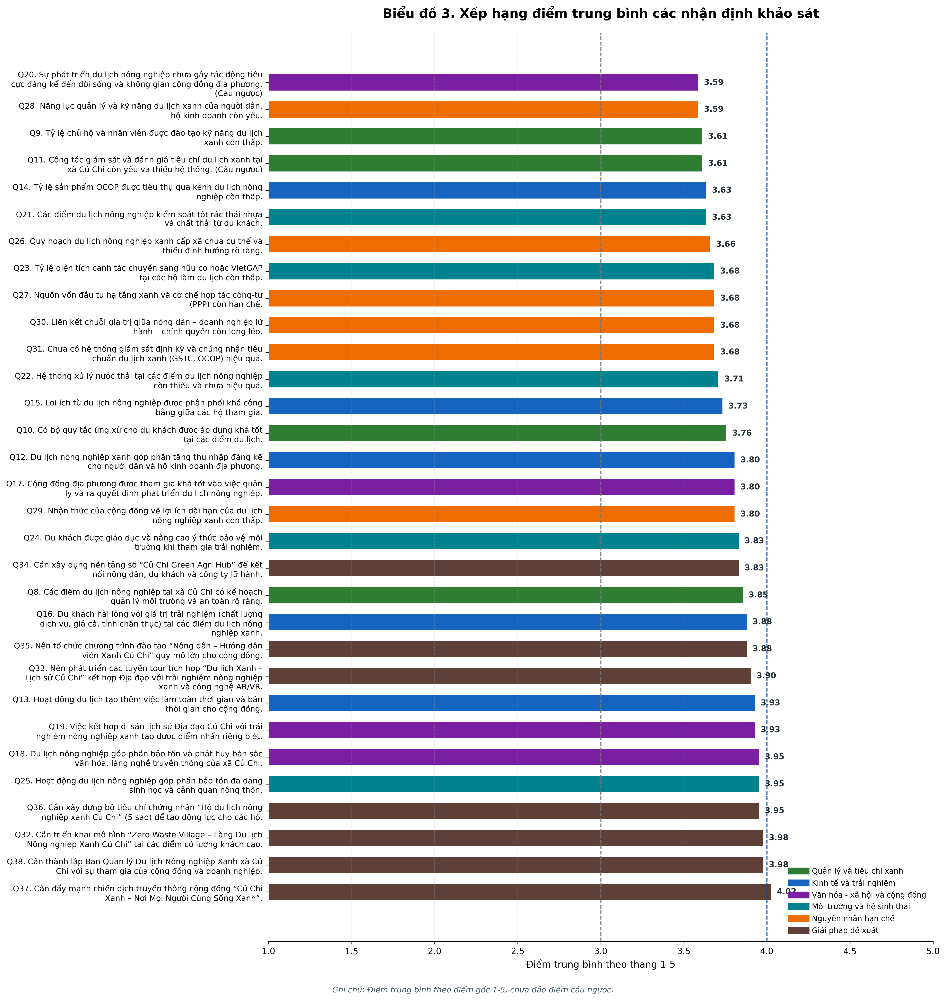
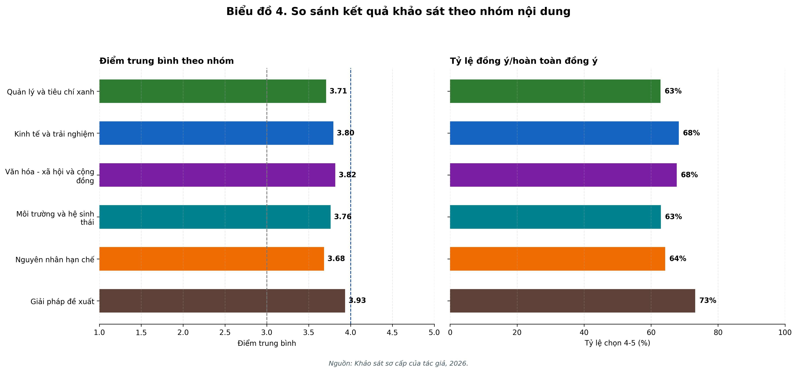
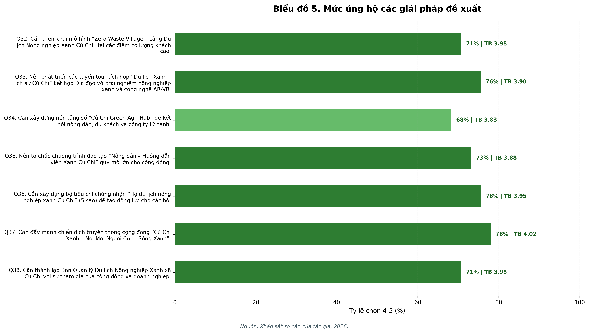
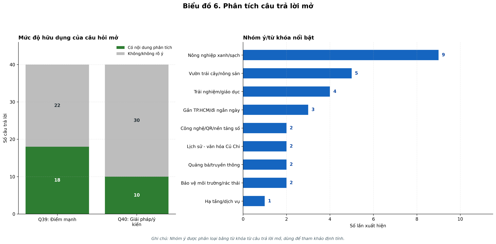

Biểu đồ phân tích câu trả lời khảo sát du lịch nông nghiệp xanh Củ Chi
Số mẫu: 41. Bảng tóm tắt Likert: bang_tom_tat_likert_q8_q38.csv. Dữ liệu câu trả lời: du_lieu_cau_tra_loi_khao_sat.csv.
01_phan_phoi_mau_khao_sat

02_phan_phoi_likert_q8_q38

03_diem_trung_binh_theo_cau_hoi

04_so_sanh_theo_nhom_noi_dung

05_muc_ung_ho_giai_phap_de_xuat

06_phan_tich_cau_hoi_mo
